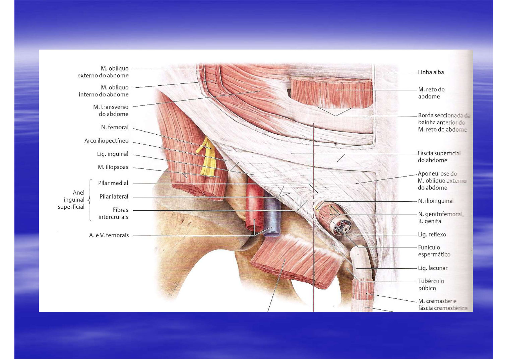
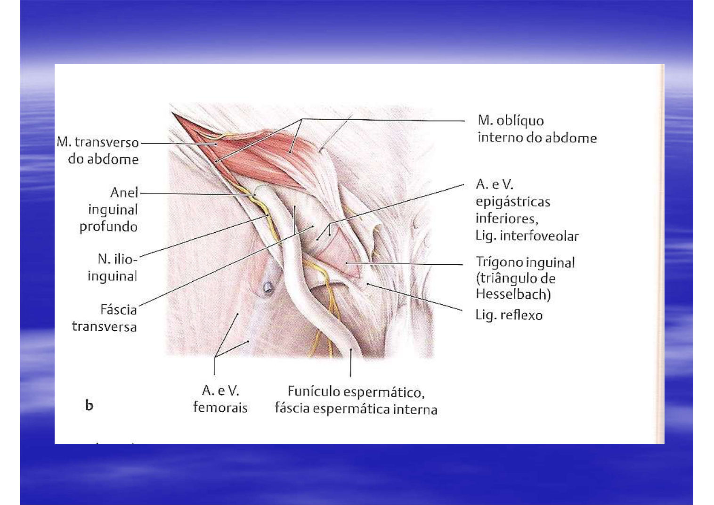
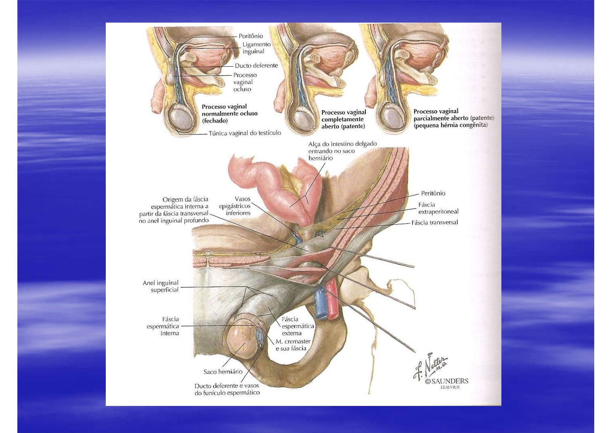
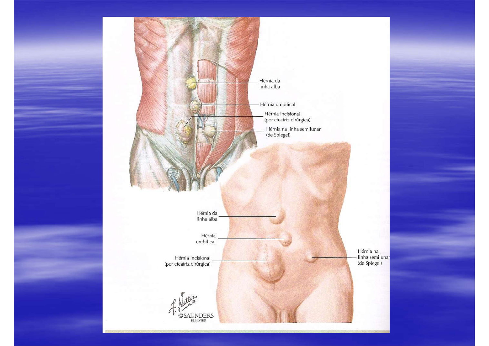
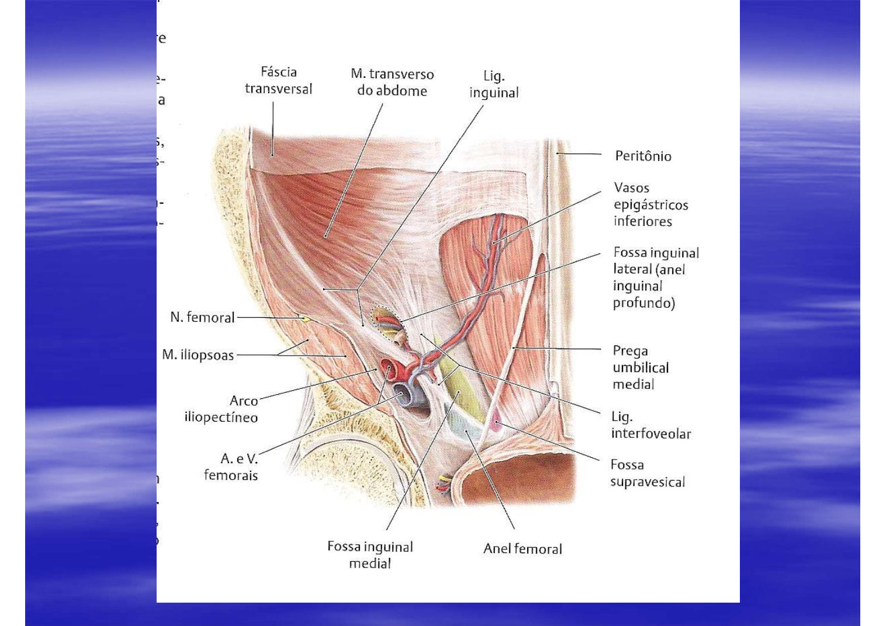
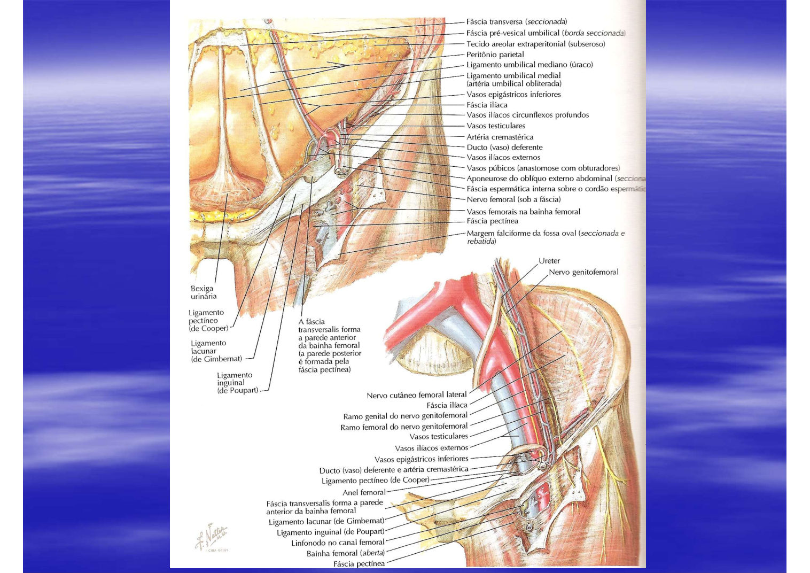
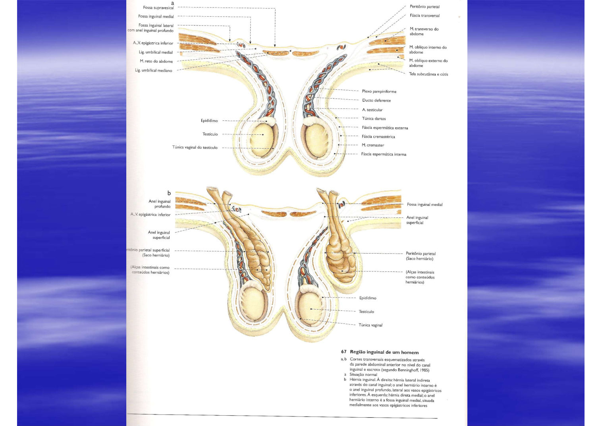

Córtex Estudos · 4º Semestre · Anatomia Topográfica · Aula 07
Região Inguinal
O canal inguinal parede por parede, o funículo espermático e suas três túnicas, a descida do testículo e o conduto peritônio-vaginal, os dois trígonos inguinais (Hesselbach e Hessert), o anel femoral com seus quatro ligamentos, a bainha e o canal femoral com os gânglios de Cloquet — e o raciocínio completo das hérnias inguinais e femorais, do exame à tela.
1 · O canal inguinal: dos anéis às medidas
- O CANAL INGUINAL é o trajeto entre o ANEL INGUINAL PROFUNDO (a fenda no plano profundo, na fossa inguinal lateral) e o ANEL INGUINAL SUPERFICIAL (o orifício na aponeurose do oblíquo externo).
- 🎯 Medidas da aula: ≈ 5 cm no homem, ≈ 3 cm na mulher.
- Quem descreveu o canal pela primeira vez foi COOPER — "olha aí, tem mais de 200 anos" (os desenhos históricos dos slides são dele).

2 · As paredes do canal e o "tendão conjunto"
Os limites do canal inguinal (o esquema da aula)
- 1ANTERIOR (cobertura) — aponeurose do OBLÍQUO EXTERNO (a primeira que se abre na cirurgia).
- 2POSTERIOR (o "assoalho" da aula) — FÁSCIA TRANSVERSAL — lembre-se: abaixo da linha arqueada não há aponeurose atrás, só fáscia transversal.
- 3SUPERIOR — TENDÃO CONJUNTO = oblíquo interno + transverso. 🎯 "Não é um tendão — é a somatória das fibras dos dois", mas a clínica chama assim.
- 4LATERAL/INFERIOR — LIGAMENTO INGUINAL (a reflexão da aponeurose do oblíquo externo).
- 5MEDIAL — borda lateral do RETO DO ABDOME.
⚠️ Nota de tradução para os livros
Os atlas costumam descrever: parede anterior = aponeurose do oblíquo externo · parede posterior = fáscia transversal · teto = fibras arqueadas do oblíquo interno + transverso · assoalho = ligamento inguinal (+ lacunar). O professor apresentou os mesmos elementos como "limites" (com a fáscia transversal chamada de assoalho/posterior) — na prova dele, use o esquema da aula; nos livros, saiba converter.
3 · Funículo espermático: as três túnicas (quem vem de quem)
| Túnica | Vem de |
|---|---|
| Fáscia espermática EXTERNA | aponeurose do OBLÍQUO EXTERNO |
| CREMASTER | OBLÍQUO INTERNO (fibras que DESCEM — "poucos livros mostram isso") |
| Fáscia espermática INTERNA | do plano do TRANSVERSO, na versão da aula |
- Conteúdo do funículo: DUCTO DEFERENTE, ARTÉRIA TESTICULAR, as veias do PLEXO PAMPINIFORME e o ramo GENITAL do nervo GENITOFEMORAL — tudo embrulhado pelas túnicas acima.
- As túnicas acompanham o funículo até dentro da bolsa escrotal — a mesma sequência de camadas desce com ele.

4 · E na mulher? Ligamento redondo — e o ilioinguinal em ambos
- Na mulher, o canal contém SOMENTE o LIGAMENTO REDONDO DO ÚTERO — 🎯 a artéria ovariana NÃO passa aqui (ela fica dentro da cavidade, indo ao ovário).
- Em AMBOS os sexos: o nervo ILIOINGUINAL desce entre o transverso e o oblíquo interno, entra no canal e o percorre junto do funículo/ligamento redondo, saindo pelo anel superficial.
5 · A descida do testículo: conduto peritônio-vaginal, retido × criptorquidia
- O testículo se forma no ABDOME e desce à bolsa escrotal pelo canal inguinal, empurrando à frente um dedo de peritônio: o CONDUTO PERITÔNIO-VAGINAL — que depois se fecha.
- 🎯 Persistência do conduto = "porteira aberta": desce alça, desce omento → é a grande causa da hérnia inguinal INDIRETA (congênita).
- Testículo RETIDO = parou no caminho (por exemplo, dentro do canal — palpável); CRIPTORQUIDIA = ainda na cavidade abdominal. Nos dois casos, a bolsa vazia exige investigação.

6 · Hesselbach × Hessert: os dois trígonos inguinais
| Trígono INGUINAL ANATÔMICO (de HESSELBACH) | Trígono INGUINAL FUNCIONAL (de HESSERT) | |
|---|---|---|
| Medial | borda lateral do reto do abdome | borda lateral do reto do abdome |
| Lateral/inferior | ligamento inguinal | ligamento inguinal |
| Superolateral | vasos EPIGÁSTRICOS INFERIORES (a prega umbilical lateral) | borda do OBLÍQUO INTERNO (rebatido) |
🎯 Por que o funcional importa: o oblíquo interno decide
O trígono de Hessert é VARIÁVEL: se o oblíquo interno tem inserção BAIXA, fecha o trígono e protege a região; se a inserção é ALTA, deixa o trígono grande e exposto — e quanto maior o trígono, maior a chance de hérnia. "A importância do oblíquo interno na gênese das hérnias é grande."
7 · Direta × indireta: as fossas decidem
- Hérnia inguinal DIRETA: ocorre na FOSSA INGUINAL MEDIAL — projeção "de frente" na parede, por fraqueza; não desce à bolsa escrotal.
- Hérnia inguinal INDIRETA: entra na FOSSA INGUINAL LATERAL → ANEL PROFUNDO → CANAL, junto do funículo — e no homem costuma descer à bolsa (inguinoescrotal). Pode carregar delgado, cólon, apêndice, tuba ou ovário.
- Dificilmente a hérnia comprime o funículo ou a artéria testicular — o que o anel estreito comprime é a ALÇA (tópico 13).

8 · Anel femoral: os quatro ligamentos-limite
O anel femoral — transição do abdome para a raiz da coxa
- 1SUPERIOR: LIGAMENTO INGUINAL — (Poupart/Falópio)
- 2MEDIAL: LIGAMENTO LACUNAR (de GIMBERNAT) — a reflexão do ligamento inguinal sobre o tubérculo púbico.
- 3INFERIOR: LIGAMENTO PECTÍNEO (de COOPER) — sobre a CRISTA PECTÍNEA ("passem a mão na crista — é ali"). É continuação do lacunar.
- 4LATERAL: LIGAMENTO ILIOPECTÍNEO — fecha o anel do lado de fora.
⚠️ Anel INGUINAL ≠ anel FEMORAL — "muita gente confunde na prova"
O anel inguinal (profundo) é a porta do canal inguinal, ainda no abdome, na fossa inguinal lateral. O anel FEMORAL é a transição abdome → raiz da coxa, ABAIXO do ligamento inguinal — por ele a artéria femoral desce e a veia femoral sobe (virando ilíaca externa). O ligamento inguinal é ao mesmo tempo limite lateral do trígono inguinal e limite superior do anel femoral. E não confunda com o trígono femoral (sartório/adutor — na coxa, outra estrutura).

9 · Bainha femoral, canal femoral e os gânglios de Cloquet
- BAINHA FEMORAL: o envelope que desce com os vasos femorais — na versão da aula, formado pela aponeurose do oblíquo externo (na frente) e pela do transverso (atrás), que inferiormente se continuam na ADVENTÍCIA dos vasos.
- 🎯 Dentro do anel: artéria femoral (a artéria é SEMPRE LATERAL à veia), veia femoral e o ramo FEMORAL do nervo genitofemoral (pequenininho, difícil de ver). O NERVO FEMORAL passa FORA do anel — pegadinha clássica.
- CANAL FEMORAL: apenas o espaço MEDIAL à veia femoral (o anel femoral é o todo; o canal é essa fatia). Contém os LINFONODOS INGUINAIS PROFUNDOS — os gânglios de CLOQUET.
🩺 A "íngua" — semiologia do povo
Processo infeccioso na perna → o linfonodo inguinal aumenta, endurece, dói — o paciente fala "deu íngua na virilha". "Tem que saber a semiologia do povo — se você não entende o que o paciente fala, aponte o dedo para onde dói."

10 · Hérnia femoral: por que é da mulher
- O anel femoral pode ser quadrilátero, quadrado ou cilíndrico — varia de pessoa a pessoa. 🎯 Quem tem o anel mais LARGO é a MULHER, porque a pelve GINECOIDE é mais larga → por isso a hérnia femoral é tipicamente feminina.
- Mecanismo: pressão abdominal alta + anel largo → alça desce pelo canal femoral (medial à veia) e protrui abaixo do ligamento inguinal — mais lateral e inferior que as inguinais.
11 · Hérnia umbilical e as fáscias de Richet
- Atrás da cicatriz umbilical existem fáscias transversas espessas — as FÁSCIAS DE RICHET. Elas se espraiam quando a parede estira: obesidade (engorda-emagrece-engorda), gravidez, ASCITE ("barriga d'água" — líquido na cavidade peritoneal).
- Espraiou → perdeu a proteção retroumbilical → hérnia UMBILICAL (por isso, mais na mulher). Conteúdo habitual: omento (gordura), às vezes alça.
12 · Diagnóstico diferencial na bolsa: hidrocele, cisto de cordão, varicocele
- Nem todo aumento inguinoescrotal é hérnia. Diferenciais citados: HIDROCELE (líquido na túnica vaginal — no tratamento, abre-se e everte-se a túnica para cessar a secreção), CISTOS DE CORDÃO/FUNÍCULO e as varizes escrotais (VARICOCELE).
- E na pele: queloide não protrui de dentro — é saliência da própria cicatriz, não confundir com hérnia incisional.
- Outras localizações lembradas na aula: epigástrica (linha alba), linha semilunar (Spiegel) e incisional (a cicatriz vira ponto de fraqueza tardio).

13 · Estrangulamento, clínica e a era da tela
- Relembrando o conceito: hérnia = protrusão de conteúdo da cavidade por ponto de fraqueza (congênito ou adquirido — cirurgia, carga: "o estivador do porto que rasga a musculatura"), com peritônio e pele ÍNTEGROS — "ninguém vê alça de fora".
- Anel largo: a alça entra e sai, trânsito preservado — pode ficar anos sem repercussão (idoso com hérnia de 20 anos: sem clínica, não precisa operar). Anel estreito: obstrui o trânsito e comprime os vasos → obstrução intestinal + isquemia/gangrena — dor, parada de eliminação, vômitos (podem virar fecaloides) → cirurgia.
- 🎯 Correção hoje: TELA (de Marlex) — "fixa a tela e acabou", porque dá menos recidiva: as técnicas antigas aproximavam o tendão conjunto do ligamento inguinal/pectíneo e a musculatura rasgava. O preço da tela: material sintético pode infectar.
14 · Resumo rápido
Canal inguinal: anel profundo (fossa lateral) → anel superficial (aponeurose do oblíquo externo); ≈5 cm ♂, ≈3 cm ♀; descrito por Cooper. Paredes (aula): anterior = oblíquo externo · posterior/assoalho = fáscia transversal · superior = tendão conjunto (OI+T, "não é tendão") · lateral = ligamento inguinal · medial = reto. Funículo: espermática externa (obl. externo) + cremaster (obl. interno) + espermática interna (plano do transverso); dentro: deferente, a. testicular, pampiniforme, ramo genital do genitofemoral. Mulher: só ligamento redondo (sem a. ovariana); ilioinguinal em ambos. Conduto peritônio-vaginal patente = hérnia indireta congênita; retido × criptorquidia. Trígonos: Hesselbach (anatômico — epigástricos inferiores) × Hessert (funcional — borda do oblíquo interno; inserção alta = trígono exposto = mais hérnia). Direta = fossa medial, não desce; indireta = fossa lateral → canal → escroto. Anel femoral: inguinal (superior) + lacunar/Gimbernat (medial) + pectíneo/Cooper (inferior) + iliopectíneo (lateral); mais largo na mulher (pelve ginecoide) → hérnia femoral feminina. Bainha femoral: artéria SEMPRE lateral à veia + ramo femoral do genitofemoral; nervo femoral FORA do anel. Canal femoral = medial à veia, com os gânglios de CLOQUET (a "íngua"). Umbilical: fáscias de RICHET espraiadas (obesidade, gravidez, ascite). DDx: hidrocele (everter túnica), cisto de cordão, varicocele; queloide não protrui. Anel estreito = obstrução + gangrena (vômito fecaloide); correção atual = TELA (Marlex — menos recidiva, risco de infecção).
🗺️ Resumão Pré-Prova — Região Inguinal
Revisão da véspera · Anatomia Topográfica · Aula 07 · só o que foi enfatizado
- Anel PROFUNDO (fossa inguinal lateral) → anel SUPERFICIAL (aponeurose do oblíquo externo) · ≈ 5 cm ♂ / 3 cm ♀ · descrito por COOPER (200+ anos).
- Paredes (aula): anterior = aponeurose do obl. EXTERNO · posterior/assoalho = FÁSCIA TRANSVERSAL (abaixo da arqueada não há aponeurose atrás) · superior = TENDÃO CONJUNTO (obl. interno + transverso — "não é tendão, é a somatória das fibras") · lateral = LIGAMENTO INGUINAL · medial = borda do RETO.
- Testículo: forma no ABDOME → desce pelo canal → conduto peritônio-vaginal fecha; patente = "porteira" = hérnia INDIRETA congênita. RETIDO = parou no caminho · CRIPTORQUIDIA = na cavidade.
- Túnicas: espermática EXTERNA ← obl. EXTERNO · CREMASTER ← obl. INTERNO · espermática INTERNA ← plano do TRANSVERSO (e descem com ele até a bolsa).
- Conteúdo: ducto deferente + a. testicular + plexo PAMPINIFORME + ramo GENITAL do genitofemoral.
- Mulher: SÓ ligamento redondo do útero (a. ovariana fica NA CAVIDADE). Em ambos: n. ILIOINGUINAL desce entre transverso e obl. interno e percorre o canal.
| HESSELBACH (anatômico) | HESSERT (funcional) | |
|---|---|---|
| Medial | reto do abdome | reto do abdome |
| Lateral | ligamento inguinal | ligamento inguinal |
| Superolateral | vasos epigástricos inferiores | borda do OBLÍQUO INTERNO |
- Oblíquo interno com inserção BAIXA fecha/protege; ALTA expõe o trígono → mais hérnia.
- DIRETA = fossa inguinal MEDIAL (projeção na parede, não desce) · INDIRETA = fossa LATERAL → anel profundo → canal → bolsa.
- Limites do ANEL FEMORAL: superior = lig. INGUINAL · medial = lig. LACUNAR (GIMBERNAT) · inferior = lig. PECTÍNEO (COOPER, na crista pectínea) · lateral = lig. ILIOPECTÍNEO.
- Bainha femoral (aula): aponeurose do obl. externo (frente) + do transverso (atrás) → viram a ADVENTÍCIA dos vasos. Dentro: ARTÉRIA SEMPRE LATERAL à veia + ramo FEMORAL do genitofemoral. N. FEMORAL fica FORA do anel.
- CANAL femoral = só o espaço MEDIAL à veia → linfonodos inguinais profundos = gânglios de CLOQUET (a "íngua" da virilha).
- Anel femoral mais LARGO na MULHER (pelve ginecoide) → hérnia femoral feminina, abaixo do ligamento, lateral e inferior.
- Conceito: protrusão por ponto de fraqueza (congênito/adquirido — carga, cirurgia) com peritônio e PELE ÍNTEGROS.
- Anel largo = trânsito preservado, pode acompanhar (idoso assintomático não opera) · anel estreito = obstrução + isquemia/gangrena (dor, parada de eliminação, vômito até FECALOIDE) = cirurgia.
- Umbilical: fáscias de RICHET retroumbilicais espraiadas por obesidade/gravidez/ASCITE → mulher+.
- DDx inguinoescrotal: HIDROCELE (everter a túnica no tratamento) · cisto de cordão/funículo · VARICOCELE. Queloide não protrui de dentro.
- Correção atual = TELA (Marlex): menos recidiva (as técnicas de aproximação rasgavam); risco = infecção do sintético.
| Par | A diferença-chave |
|---|---|
| Anel INGUINAL × anel FEMORAL | porta do canal inguinal (abdome) × transição abdome→coxa, ABAIXO do ligamento ("cai na prova") |
| Anel femoral × CANAL femoral | o orifício todo × só a fatia MEDIAL à veia (com Cloquet) |
| Hesselbach × Hessert | limite superolateral: vasos epigástricos inferiores × borda do oblíquo interno (variável!) |
| Nervo femoral × ramo femoral do genitofemoral | FORA do anel × DENTRO da bainha (pequenininho) |
| Trígono inguinal × trígono FEMORAL | parede abdominal × raiz da coxa (sartório/adutor) |
| Retido × criptorquidia | parou no trajeto (ex.: canal) × ainda na cavidade abdominal |
| Direta × indireta | fossa MEDIAL, projeção na parede × fossa LATERAL→canal→bolsa (conduto patente) |
| Hérnia × hidrocele/cisto/varicocele | protrusão de conteúdo da cavidade × líquido/cisto/veias — diferenciais da bolsa |
Banco de Questões — Região Inguinal
Anatomia Topográfica · Aula 07 · estilo ENADE/residência.